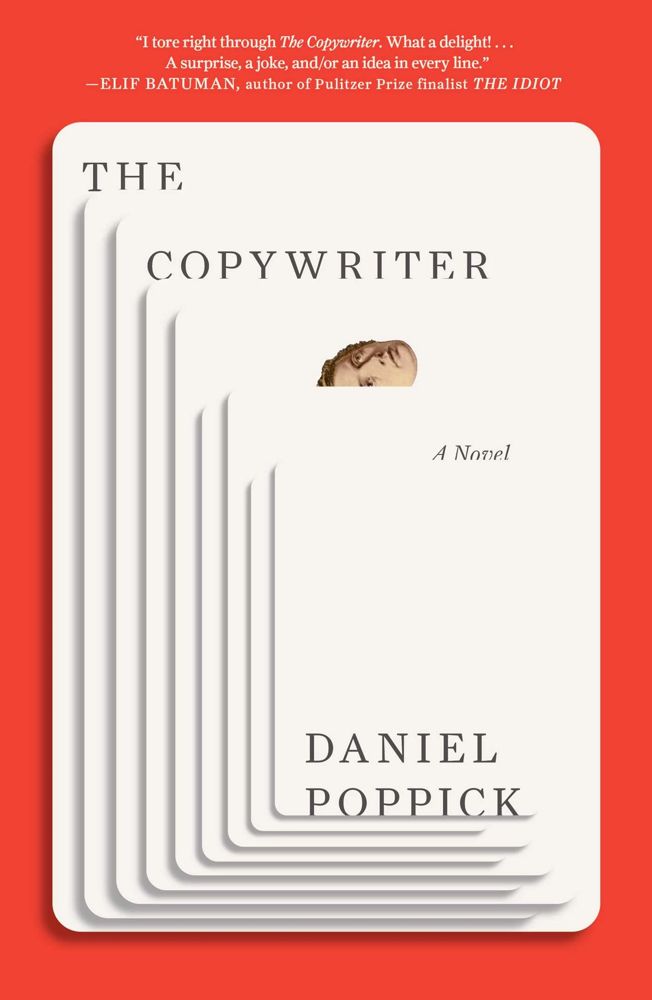

Daniel Poppick’s The Copywriter
The Copywriter is the novel that every writer with a day job has been waiting for someone to write. Not the romanticised version where the artist starves beautifully in a garret. The real one. Where the artist writes product descriptions for lavender-scented yoga mats and “Yas Queen” throw pillows, and goes home at night wondering what happened to the words.

I came to this book because of the title. I am a copywriter. Or I have been, in one form or another, for the better part of a decade. I have written landing pages and email campaigns and SEO-optimised blog posts for companies that paid me well to make language do something it was not designed to do: sell. And in the evenings I wrote fiction and poetry and told myself the two things were separate. That the day job was the job and the writing was the life. Daniel Poppick knows that separation is a lie, and The Copywriter is the novel that proves it.
The setup
It is the summer of 2017. D__, a poet living in Brooklyn, works as a copywriter at a retail startup that sells the kind of products you scroll past on Instagram and forget about immediately. His boss is a twenty-four-year-old CEO with more charisma than experience. His relationship with his long-term girlfriend is dissolving in the quiet way that long relationships dissolve, not with a fight but with a slow erosion of the reasons you stayed. The Trump administration is in its first year. The world feels like it is accelerating toward something nobody can name.
D__ begins keeping a notebook. He fills it with dreams, scraps of conversation, emails, observations, and short pieces he calls “parables.” The novel is that notebook. It unfolds season by season across two years, structured as a journal rather than a conventional narrative. There is no plot in the traditional sense. There is a life, recorded with the precision and the drift of a poet who cannot stop noticing things even when he wants to.
A poet’s prose
Poppick is a poet first. His collections Fear of Description (winner of the National Poetry Series) and The Police preceded this novel, and the poetry is in every sentence. Not in the showy, look-at-me way that some poets bring to prose. In the structural way. Sentences are built with a poet’s ear for rhythm and a poet’s instinct for compression. Paragraphs land where a stanza would. White space does work that exposition would do in a more conventional novel.
The prose style shifts register constantly, and that is part of the point. D__ moves between the language of his day job (marketing copy, launch decks, brand guidelines) and the language of his real work (poetry, observation, the attempt to say something true). The collision between these two registers is where the comedy lives. And The Copywriter is genuinely funny. Not in the way literary novels are sometimes described as funny by reviewers who mean “wry.” Funny in the way that makes you laugh aloud on a train and then feel vaguely sad about why you are laughing.
The humour comes from recognition. Anyone who has sat in a meeting where someone used the phrase “strengthening our connection with the customer” while discussing a scented candle will understand the particular despair Poppick is mapping. The language of corporate culture is a parody of the language of meaning, and D__ lives inside that parody eight hours a day before going home to write poems that nobody reads.
The spiritual gulf
The novel’s subtitle calls it “a portrait of the poet as an office worker” and its central question is the one that every working artist carries around like a stone in their pocket: how wide is the gap between the work you do for money and the work you do for yourself? And what happens to you when you spend your best hours in the gap?
Poppick does not answer this question. He maps it. D__’s parables, scattered throughout the novel, are attempts to extract meaning from the ordinary, to find a pattern in the noise. Some of them work. Some of them are deliberately, beautifully absurd. The novel does not distinguish between the two because D__ cannot distinguish between the two. When you spend your days writing product descriptions, the line between meaningful language and meaningless language starts to blur. That blur is the novel’s subject.
What makes The Copywriter different from other novels about artistic frustration is that Poppick does not treat the day job as the enemy. The startup is ridiculous, yes. The CEO is a comic creation. The products are absurd. But D__ does not hate the work. He is confused by it. He is interested in it, in the way a poet is interested in anything that uses language. At one point he describes poetry as “the art of turning away from labour while performing it.” That line is the whole book in thirteen words.
The journal as form
The novel is structured as a series of dated notebook entries. Dreams sit alongside real events. Poems appear between prose passages. Emails are reproduced. Conversations are recalled in fragments. The effect is closer to an artist’s sketchbook than a novel, and that is the formal risk Poppick takes.
It works because the accumulation creates its own momentum. Individually, the entries are slight. Some are a paragraph. Some are a page. But as they stack up, season after season, a life emerges in full dimension. The dissolution of D__’s relationship is not dramatised. It is observed, entry by entry, until the reader realises it has already ended before D__ does. The loss of the job, the road trip that follows, the new copywriting position at a Jewish community centre: none of these are narrated as turning points. They simply happen, the way things happen in a life, without the courtesy of announcing themselves as significant.
This is what a poet’s sensibility brings to the novel form. Not lyricism for its own sake, but an attention to the minor, the overlooked, the things that happen between the things that happen. Poppick understands that most of life is not dramatic. Most of life is Tuesday. And the challenge of writing about Tuesday, without making it either boring or falsely profound, is the challenge this novel sets for itself and meets.
What it teaches writers
For anyone who writes, The Copywriter offers a specific and useful provocation: the language you use for money and the language you use for art are not separate systems. They contaminate each other. The rhythms of marketing copy seep into your sentences whether you want them to or not. The instincts of a poet surface in your product descriptions whether your employer appreciates it or not. Poppick does not treat this contamination as a tragedy. He treats it as material.
The craft lesson is in the form. The journal structure allows Poppick to move between registers, tones, and modes without the transitions that a conventional novel would require. A dream can follow an email can follow a poem can follow a meeting. The reader adjusts. The effect is a texture that feels closer to how consciousness actually works than the linear narrative of a traditional novel.
The other lesson is tonal. The Copywriter is funny and sad simultaneously, and never signals which one it is being. The comedy is not a defence against the sadness. The sadness is not a correction of the comedy. They coexist. That is harder to sustain than it sounds, and Poppick sustains it for 224 pages without dropping either one.
“The more D__ tries to find meaning in his labour, the more he realises the labour is designed to parody the very concept of meaning.”
The Copywriter is worth reading for its treatment of language as both commodity and art, for its formal inventiveness, and for its refusal to resolve the tension between the two lives every working artist leads. It is short (224 pages), fast, and deceptively light on its feet for a novel carrying this much weight. Poppick writes like a poet who has learned what the novel can do that the poem cannot: hold time, accumulate detail, and let a life reveal itself slowly through the things a person writes down when they think nobody is watching. Read it alongside Ben Lerner’s Leaving the Atocha Station, another novel about a poet trying to figure out what poetry is for, and Sheila Heti’s How Should a Person Be?, which asks the same questions about art and authenticity from a different angle. Both are in conversation with The Copywriter even though Poppick’s book is funnier than either of them and, in the end, more generous.
If this was useful, buy me a coffee.
Flash fiction and prose poetry in the tradition of what you just read. Written on the road. Over 1,200 readers. Free.
Read and subscribe →